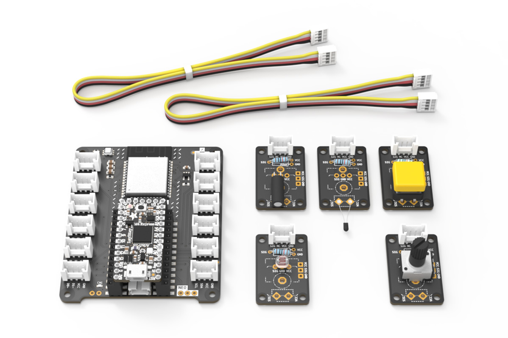
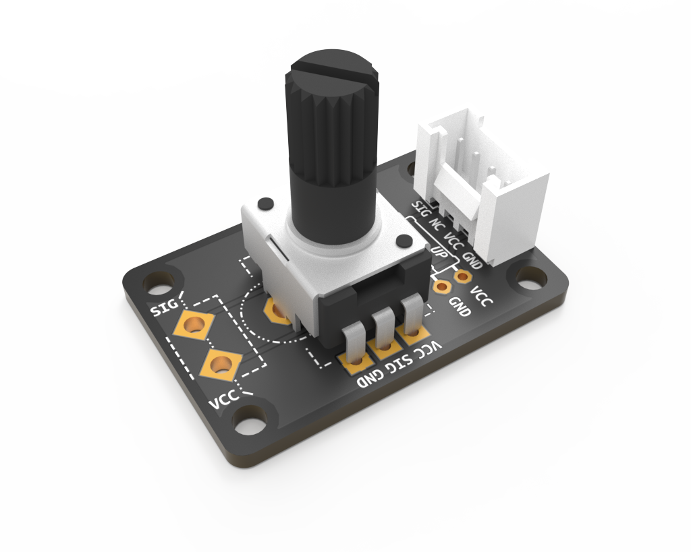
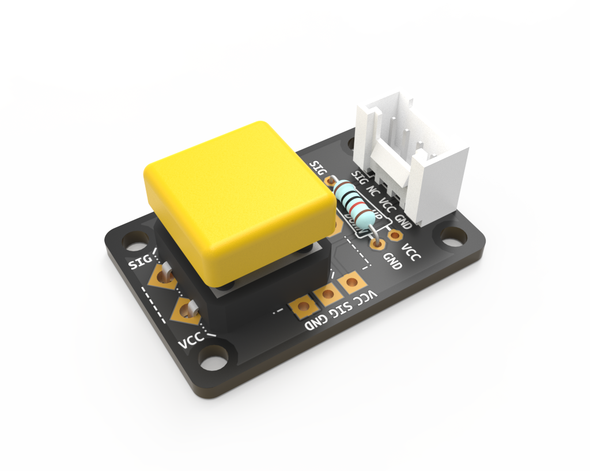
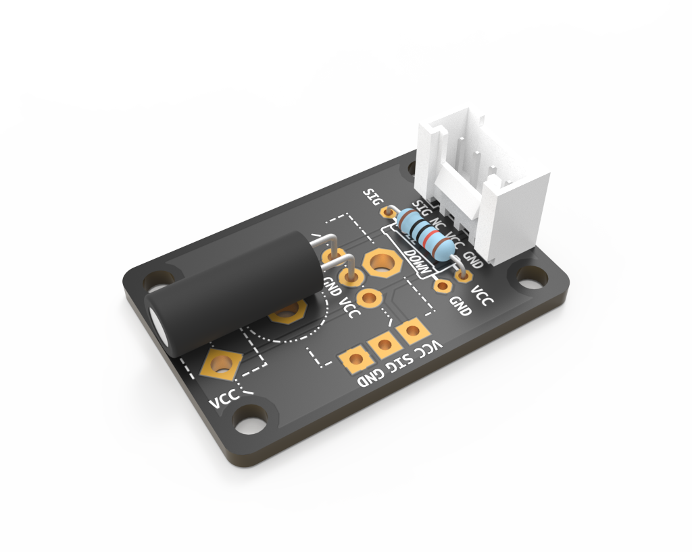
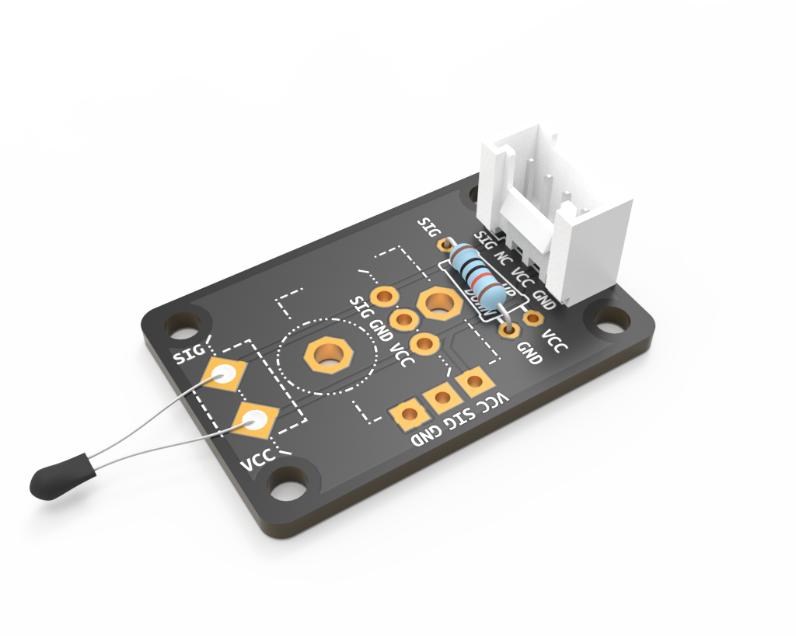
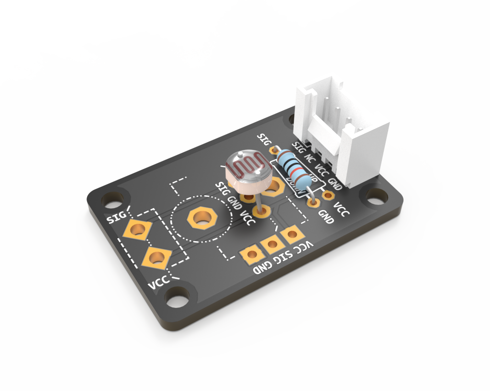

In addition to ready-made Grove components, the Connected Interaction Kit provides several custom components for you to assemble yourself. Here you can find resources on how to solder and detailed assembly instructions for each component.
If you have no prior soldering experience, we strongly advise you begin with the soldering tutorial.
| Potentiometer | Tactile Switch | Tilt Switch | Thermistor | Photoresistor |
|---|---|---|---|---|
| Position/Angle | Push | Tilt | Temperature | Brightness |
|  |  |  |  |  |
| Make One! | Make One! | Make One! | Make One! | Make One! |